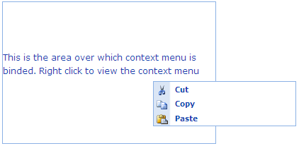

Menu supports context menu mode, such that the list of items appears as menu when right-clicked over a target area, thereby preventing the default browser’s context menu.
Properties
|
Name |
Description |
Type of property |
Value it accepts |
Dependency |
|
Mode |
Defines the behaviour mode of the menu either normal menu or context menu |
enum |
MenuModel.ModeType.NormalMenu, MenuModel.ModeType.ContextMenu |
ContextMenuTargetId is mandatory |
|
ContextMenuTargetId |
Gets the ID of the DOM element over which the context menu is to be bound |
string |
Any string |
NA |
Using Builder
The following steps guide you in configuring the menu mode using Builder:
1. In View,
create the target area over which the context menu is to be bound. Then create
ul-li hierarchy of menu items and invoke the menu helper with the menu Contents
ID as the first argument and enable the Mode and ContextTargetId
methods with the desired options as:
|
View[ASPX]
<%--Target area over which context menu is to be binded--%> <div id="contextArea" style="height: 200px; width: 300px; border: 1px solid #8BB1E5"> <p>This is the area over which context menu is binded. Right click to view the context menu</p> </div> <%--Menu items--%> <ul id="myMenu"> <li> <img src='<%= Url.Content("~/Content/Cut.gif")%>' /> <a>Cut</a></li> <li> <img src='<%= Url.Content("~/Content/Copy.gif")%>' /> <a>Copy</a></li> <li> <img src='<%= Url.Content("~/Content/Paste.gif")%>' /> <a>Paste</a></li> </ul> <%--Menu Helper--%> <%=Html.Syncfusion().Menu("myMenu") .ContextMenuTargetId("contextArea") %>
|
|
View[cshtml]
@*--Target area over which context menu is to be binded--*@ <div id="contextArea" style="height: 200px; width: 300px; border: 1px solid #8BB1E5"> <p>This is the area over which context menu is binded. Right click to view the context menu</p> </div> @*--Menu items--*@ <ul id="myMenu"> <li> <img src='@Url.Content("~/Content/Cut.gif")' /> <a>Cut</a></li> <li> <img src='@Url.Content("~/Content/Copy.gif")' /> <a>Copy</a></li> <li> <img src='@Url.Content("~/Content/Paste.gif")' /> <a>Paste</a></li> </ul> @*--Menu Helper--*@ @{
Html.Syncfusion().Menu("myMenu") .ContextMenuTargetId("contextArea").Render(); }
|
2. Run the application.
Using Properties Model
The following steps guide you in configuring the menu mode through the Properties model.
1. In the Controller, create an instance of MenuModel ,define the Mode and ContextMenuTargetId properties and pass the instance through view-specific data to View as given below:
|
[Controller]
public ActionResult Index() { MenuModel myModel = new MenuModel(); myModel.Mode = MenuModel.ModeType.ContextMenu; myModel.ContextMenuTargetId = "contextArea";
ViewData["myMenuModel"] = myModel; return View(); }
|
2. In View, create the target area over which the context menu is to bebound. Then create ul-li hierarchy of menu items and invoke the menu helper with the Menu Contents ID as the first argument and view data key as the second argument.
|
View[ASPX]
<%--Target area over which context menu is to be binded--%> <div id="contextArea" style="height: 200px; width: 300px; border: 1px solid #8BB1E5"> <p>This is the area over which context menu is binded. Right click to view the context menu</p> </div> <%--Menu items--%> <ul id="myMenu"> <li> <img src='<%= Url.Content("~/Content/Cut.gif")%>' /> <a>Cut</a></li> <li> <img src='<%= Url.Content("~/Content/Copy.gif")%>' /> <a>Copy</a></li> <li> <img src='<%= Url.Content("~/Content/Paste.gif")%>' /> <a>Paste</a></li> </ul> <%--Menu Helper--%> <%=Html.Syncfusion().Menu("myMenu","myMenuModel")%> |
|
View[cshtml]
@*--Target area over which context menu is to be binded--*@ <div id="contextArea" style="height: 200px; width: 300px; border: 1px solid #8BB1E5"> <p>This is the area over which context menu is binded. Right click to view the context menu</p> </div> @*--Menu items--*@ <ul id="myMenu"> <li> <img src='@Url.Content("~/Content/Cut.gif")' /> <a>Cut</a></li> <li> <img src='@Url.Content("~/Content/Copy.gif")' /> <a>Copy</a></li> <li> <img src='@Url.Content("~/Content/Paste.gif")' /> <a>Paste</a></li> </ul> @*--Menu Helper--*@ @{ Html.Syncfusion().Menu("myMenu","myMenuModel").Render();}
|
3. Run the application.
The following screenshot illustrates the output:

Figure 153: Context menu